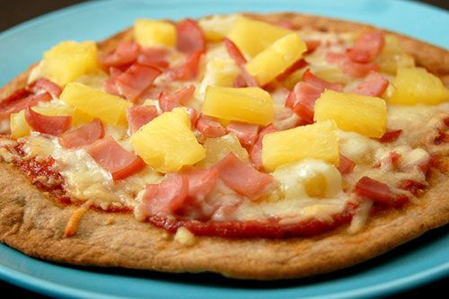

Pizza Hawai

1 uur
2 personen
Ingrediënten
- 1 teentje look
- 1 tomatenpuree
- 2 tomaten
- 1 sjalot [versnipperd]
- 4 sneden ham
- 4 schijven verse ananas
- snuifje suiker
- 2 olijfolie
- peper en zout
Bereiding
- Stoof sjalot, look en tomaat aan in olijfolie.
- Voeg de tomatenpuree toe en laat alles op een zacht vuurtje sudderen.
- Voeg een snuifje suiker, peper en zout toe.
- Mix de saus.
- Rol het deeg uit op een plank.
- Neem de saus, bedek er de pizzabodems mee.
- Snij de ham en de ananas in stukjes en strooi ze willekeurig over de tomatensaus.
- Bedek het geheel met een beetje gemalen kaas en bak ze 15 minuten in een oven van 225°